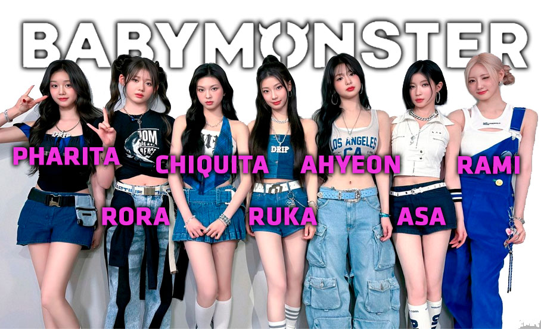

"Em conversa com a CNN, as integrantes contaram como foi esse reencontro completo, deram detalhes da intensa rotina de treinos vocais, falaram sobre como descobriram a paixão pela música e mandaram uma mensagem especial para os fãs brasileiros. Confira:"
Parabéns pela estreia de vocês! Podem contar um pouco como começou o amor de vocês pela música? Quando descobriram a paixão por cantar, dançar e fazer rap?
RUKA: Comecei a aprender a dançar no primeiro ano do ensino fundamental, e desde então adoro me apresentar no palco. Minha paixão pela dança é incomparável. Depois que me tornei trainee, aprendi a cantar e a fazer rap, e gosto disso porque posso me expressar de maneiras mais diversas.
ASA: Comecei a frequentar uma escola de dança no primeiro ano do ensino médio, e foi aí que senti a alegria de ouvir música e me interessei pela dança. Enquanto ouvia várias músicas, sonhava em me tornar uma artista. Desde que me convenci de que “esse é o meu caminho”, venho trabalhando duro para perseguir esse sonho.
AHYEON: Sempre gostei de tocar música e dançar desde pequena. Sempre que tocava música, eu não conseguia ficar parada. Acredito que adquiri o entusiasmo pela música e dança desde esses primeiros dias.
RAMI: Na verdade, aprendi a dançar e cantar só depois que cheguei na YG, mas quanto mais aprendia, mais pensava: “Ah, eu definitivamente preciso me tornar uma artista”. Foi assim que comecei a sonhar em ser uma artista e fiz minha estreia.
PHARITA, RORA, CHIQUITA: Nós três amávamos música desde muito jovens e sonhávamos em nos tornar artistas enquanto assistíamos às músicas e danças dos artistas da YG que estavam ativos na cena musical antes de nós.
Vocês lembram da primeira apresentação de vocês na frente de uma plateia antes de entrar no BABYMONSTER? Como essa experiência se compara às performances de vocês agora, após a estreia?
ASA, RAMI: Temos treinado bastante individualmente, e nossas habilidades de canto, rap e dança estão crescendo rapidamente. Além disso, a maior diferença agora, em comparação aos dias antes do nosso debut, é a nossa atitude em relação às apresentações. Antes, nos preocupávamos em não cometer erros nas letras ou na coreografia. Agora, pensamos em maneiras para que nossos fãs possam amar ainda mais nossas performances e se divertir junto com a gente.
RORA: Quando estávamos no palco antes da estreia, havia uma certa falta de jeito porque não estávamos acostumadas, mas agora sinto que estamos crescendo constantemente. No futuro, queremos nos apresentar em muitos mais palcos e mostrar a todos como estamos evoluindo.
CHIQUITA: Lembro de estar muito tensa e preocupada no início. Mas uma vez que subimos no palco, ficamos tão felizes. O que é mais diferente de antes é que agora temos fãs ao nosso lado. Ficamos ainda mais felizes quando vemos eles torcendo pela nossa performance e se divertindo.
BABYMONSTER - ‘SHEESH’ MOVIE As suas performances ao vivo são muito elogiadas. Cantores como Beyoncé e Taylor Swift tem o costume de correr enquanto cantam em suas rotinas vocais. Vocês têm algum ritual ou prática única para cuidar das suas vozes?
TODAS: Sempre nos certificamos de cuidar bem das nossas vozes. Bebemos chá quente e tentamos comer muito mel de manuka ou balas que são benéficas para a garganta. Antes de subir no palco, sempre fazemos muitos exercícios de vibração labial para aquecer as vozes. Também corremos para nos preparar para uma performance ao vivo perfeita e dançamos enquanto cantamos, como faríamos no palco, para nos fortalecer fisicamente.
RUKA: Minha escolha seria “SHEESH.” Eu gosto especialmente dela porque é a faixa com a qual retornamos como um grupo completo, e o clima dark hip-hop combina bem com a gente.
RAMI: Tenho mais carinho por “BATTER UP”, já que é a primeira faixa que lançamos como BABYMONSTER, e também amo “LIKE THAT” porque a música foi um presente dado por Charlie Puth, que é meu artista favorito.
CHIQUITA: Minha opinião é que “MONSTERS (Intro)” é uma música que expressa muito bem o BABYMONSTER. A parte “Outnumber you 7 to 1” especialmente nos retrata de forma poderosa.
RORA: Dentre todas as faixas, tenho um carinho especial por “SHEESH”. Foi a primeira música que apresentamos aos nossos fãs e também nossa faixa-título como grupo completo, por isso tenho um apego especial por ela.
Como foi se reunir como um grupo de sete membros novamente?
PHARITA: BABYMONSTER sempre foi um grupo de sete integrantes desde o início. Por isso, nos sentimos mais completas durante as atividades recentes, e estou ansiosa pelos nossos planos futuros.
CHIQUITA: Esperei muito para ver nós sete reunidas, então estou extremamente feliz.
AHYEON: Estou muito feliz em ver todas as nossas sete integrantes juntas, e aprendo muito com elas. Quero que continuemos saudáveis e ativas juntas por muito tempo.
RORA: Estou encantada em ver finalmente nossas sete integrantes juntas assim, e cada dia se torna uma grande memória. Estou muito feliz!
ASA: “SHEESH” teve uma parte de rap com RUKA e AHYEON. Essa combinação foi muito mais sincronizada do que esperávamos e recebeu muito amor de todos. Acho que seria divertido e legal formar uma unit de rap no futuro.
AHYEON, RAMI: Gostaríamos de experimentar músicas como R&B, Soul ou canções que possam ser ouvidas no quarto enquanto se dança ao ritmo! Amamos ouvir o trabalho de artistas como SZA, Ella Mai e H.E.R., então definitivamente queremos cantar músicas que tenham o charme de serem relaxantes, mas também cativantes o suficiente para serem tocadas repetidamente. Também gostaríamos de experimentar músicas animadas do gênero Pop.
Com membros da Coreia do Sul, Tailândia e Japão, como é misturar suas culturas no grupo?
TODAS: No início, a gente conversava com a ajuda de um aplicativo de tradução porque era difícil se comunicar, mas agora todas estão tão fluentes em coreano que não há mais dificuldades de comunicação. Todas nós nascemos em países diferentes, então é muito divertido aprender as línguas umas das outras e experimentar novas culturas. Acima de tudo, é ótimo conhecer e experimentar juntas os pratos deliciosos de cada país.
Vocês têm uma base de fãs significativa no Brasil e no mundo todo. Como é ser acolhida por fãs de todo o mundo e quais são os planos para manter uma boa interação com os fãs internacionais?
RUKA: Gostaríamos de agradecer a todos pelo grande amor que recebemos até agora, mesmo que não tenha se passado muito tempo desde o nosso debut. Queremos mostrar mais do nosso crescimento no futuro. Estamos preparando vários conteúdos e eventos para nossos fãs em todo o mundo, então, por favor, aguardem ansiosamente!
ASA: Recebemos muito apoio e atenção desde os nossos dias de trainee através dos nossos vídeos, mas estamos sempre gratas por termos nos tornado conhecidas por muito mais pessoas recentemente e por recebermos tanto amor. Cada palavra de encorajamento dos nossos fãs é uma grande ajuda e motivação para nós. Sempre tentaremos retribuir seu apoio. Por favor, aguardem nossos futuros projetos!
RORA: Nosso maior objetivo é fazer uma turnê mundial. Embora ainda não tenhamos muita experiência no palco, gostaríamos de ganhar mais experiência rapidamente para que possamos em breve fazer uma turnê mundial e conhecer nossos fãs globais.
RAMI: Gostaríamos de nos comunicar mais com nossos fãs ao redor do mundo e realizar várias apresentações em fan meetings ou shows. Somos muito gratos pela constante atenção e apoio de vocês, e isso nos dá muita força. Muito obrigado!
PHARITA: Adoro conversar com minha família ou amigos pelo telefone. Também gosto de colorir, maratonar dramas e escrever letras sempre que me inspiro.
RORA: Quando temos tempo livre, assisto aos filmes que quero ver ou desenho enquanto assisto a vídeos interessantes. E me sinto incrivelmente feliz quando pedimos comida gostosa após nossa programação diária e comemos enquanto conversamos.
RUKA: Quando tenho tempo livre, descanso em casa assistindo filmes e dramas de TV ou faço alguma limpeza! Às vezes, saio para fazer compras, mas na maioria das vezes descanso em casa o dia todo.
CHIQUITA: Normalmente, eu desenho sempre que tenho tempo. Também gosto de pedir e comer comida gostosa com as outras integrantes em casa antes de dormir.
PHARITA: Queremos nos tornar artistas que transmitam alegria através da música e troquem influências positivas com nossos fãs. Também gostaríamos de lançar muitas mais músicas e álbuns e até mesmo fazer uma turnê mundial!
AHYEON: Gostaríamos de cantar nossas músicas em grandes festivais de música, como Coachella e Lollapalooza, e nos apresentar no Grammy Awards.
CHIQUITA: Gostaríamos de fazer uma turnê de shows para que nossos fãs em todo o mundo possam assistir às nossas performances e para que possamos nos tornar boas artistas com grande potencial.
ASA: BABYMONSTER acabou de virar sua primeira página, então gostaríamos de promover o grupo para ainda mais pessoas e nos tornarmos artistas que permanecem na memória por muito tempo. Também esperamos que todos os nossos integrantes estejam sempre saudáveis, aproveitem a música com alegria e se comuniquem frequentemente com nossos fãs.
TODAS: Olá, fãs do Brasil! Muito obrigada por sempre amarem e apoiarem BABYMONSTER! Como BABYMONSTER, faremos o nosso melhor para retribuir o imenso amor que vocês nos deram. Por favor, aguardem nossos futuros projetos, e trabalharemos mais para encontrar nossos fãs brasileiros com mais frequência através de muitas oportunidades. Devemos nos encontrar em uma próxima vez! Amamos vocês!
fonte: CNN (K-POP)